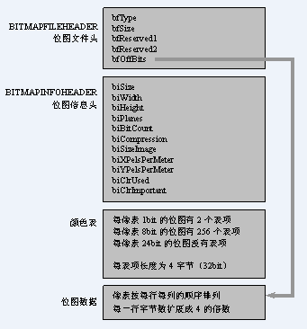

前言
要识别图像中的字符，首先要会处理图像，把图像的信息读出来。这就必须先了解图像的结构，存储方式。这里推荐清华大学出版的一本《数字图像处理编程入门》，第一章的“Windows位图和调色板”有详细的介绍。
对于彩色图，可以用RGB模型来表示，这是BMP位图最常用的编码方法。基本上所有颜色都可以用这三种颜色的组合来形成。但实际上也有一些差别，小于24位图都利用到了调色板（也叫颜色表），也就是一张R、G、B表，主要是为了节省存储空间。
实际上，使用RGB模型表示的图像，也叫 三通道图（每个通道对应R、G、B）。三通道图每个像素值都通过R、G、B混合计算生成，R、G、B的取值范围为 0 ~ 255。
与之对应的则是 单通道图，也称灰度图，其每个像素点只能有有一个值表示颜色，它的像素值范围为 0 ~ 255，0是黑色，255是白色，中间值是一些不同等级的灰色。
除此之外，还有 四通道图 RGBA，最后的A表示透明度。
BMP位图的数据结构
BMP的数据结构由4部分组成：
| 数据段名称 | 对应的Windows结构体定义 | 大小（Bytes） |
|---|---|---|
| 位图文件头 | BITMAPFILEHEADER | 14 |
| 位图信息头 | BITMAPINFOHEADER | 40 |
| 调色板 | - | 由颜色索引数决定 |
| 位图数据 | - | 由图像尺寸决定 |

P1. 位图文件头：BITMAPFILEHEADER
这部分是一个结构体，其定义如下：
typedef struct tagBITMAPFILEHEADER {
WORD bfType;
DWORD bfSize;
WORD bfReserved1;
WORD bfReserved2;
DWORD bfOffBits;
} BITMAPFILEHEADER;这个结构的长度是固定的，为14个字节（WORD为无符号16位整数，DWORD为无符号32位整数），各个域的说明如下：
| 变量名 | 地址偏移 | 大小（Bytes） | 作用 |
|---|---|---|---|
| bfType | 0000H | 2 | 指定文件类型，可取值为： BM : Windows 3.1x, 95, NT, … BA : OS/2 Bitmap Array CI : OS/2 Color Icon CP : OS/2 Color Pointer IC : OS/2 Icon PI : OS/2 Pointer 实际上windows下固定值为0x424D，即字符串“BM” |
| bfSize | 0002H | 4 | 说明该位图文件的大小（单位字节，且包括这14个字节） |
| bfReserved1 | 0006H | 2 | 保留字，必须设置为0 |
| bfReserved2 | 0008H | 2 | 保留字，必须设置为0 |
| bfOffBits | 000AH | 4 | 说明从文件头开始到实际图像数据之间的字节偏移量 （即上图中前三个部分的长度之和）。 这个参数是非常有用的，因为位图信息头和调色板的 长度会根据不同情况而变化，而我们可以利用这个 偏移值迅速从文件中读到位图数据 |
P2. 位图信息头：BITMAPINFOHEADER
这部分也是一个结构体，其定义如下：
typedef struct tagBITMAPINFOHEADER {
DWORD biSize;
LONG biWidth;
LONG biHeight;
WORD biPlanes;
WORD biBitCount
DWORD biCompression;
DWORD biSizeImage;
LONG biXPelsPerMeter;
LONG biYPelsPerMeter;
DWORD biClrUsed;
DWORD biClrImportant;
} BITMAPINFOHEADER;这个结构的长度是固定的，为40个字节（LONG为32位整数），各个域的说明如下：
| 变量名 | 地址偏移 | 大小（Bytes） | 作用 |
|---|---|---|---|
| biSize | 000EH | 4 | 指定这个结构的长度，为40字节 |
| biWidth | 0012H | 4 | 指定图象的宽度，单位是像素 |
| biHeight | 0016H | 4 | 指定图象的高度，单位是像素。 注：这个值除了用来描述图像的高度之外，它还用于指明 这个图像是倒向还是正向的图像。 若是正数则是倒向图像，若是负数则是正向图像。 多数BMP图像都是正数，亦即是倒向图像。 |
| biPlanes | 001AH | 2 | 为目标设备说明颜色的平面数。 其值总是为1。 |
| biBitCount | 001CH | 2 | 指定表示颜色时要用到的位数，常用的值为： 1：黑白二色图 4：16色图 8：256色 24：真彩色图 注：新的BMP格式支持32位色 |
| biCompression | 001EH | 4 | 说明图像数据的压缩类型，取值范围为： 0：BI_RGB（不压缩，最常用） 1：BI_RLE8（8比特游程编码，只用于8位位图） 2：BI_RLE4（4比特游程编码，只用于4位位图） 3：BI_BITFIELDS（比特位，用于16/32位位图） 4：BI_JPEG（JPEG位图，仅用于打印机） 5：BI_PNG（PNG位图，仅用于打印机） 注：我们后面所讨论的只有不压缩的情况。 |
| biSizeImage | 0022H | 4 | 指定实际的位图数据占用的字节数。 若biCompression=BI_RGB，则可设置为0。 其计算公式为： biSizeImage = biWidth’ × biHeight 注：biWidth’ 必须是4的整倍数，因此公式里不是 biWidth。 如：若 biWidth=240，则biWidth’=240 若 biWidth=241，则biWidth’=244 |
| biXPelsPerMeter | 0026H | 2 | 指定目标设备的水平分辨率。 单位是每米的像素个数，是有符号整数。 |
| biYPelsPerMeter | 002AH | 2 | 指定目标设备的垂直分辨率。 单位是每米的像素个数，是有符号整数。 |
| biClrUsed | 002EH | 2 | 指定本图象实际用到彩色表中的颜色索引数。 若为0，则说明使用所有调色板项（数量为$\small{2^{biBitCount}}$）。 |
| biClrImportant | 0032H | 2 | 指定本图象中重要的颜色数。 若为0，则认为所有的颜色都是重要的。 |
P3. 调色板/颜色表：Palette
当然，这里是对那些需要调色板的位图文件而言的。
前面已经说过，有些位图（如真彩色图）是不需要调色板的，即在 位图信息头BITMAPINFOHEADER 的后面直接就是位图数据。
调色板实际上是一个数组，共有biClrUsed个元素（如果该值为零，则有$\small{2^{biBitCount}}$个元素）。
数组中每个元素的类型是一个RGBQUAD结构，占4个字节，其定义如下：
typedef struct tagRGBQUAD {
BYTE rgbBlue; //该颜色的蓝色分量
BYTE rgbGreen; //该颜色的绿色分量
BYTE rgbRed; //该颜色的红色分量
BYTE rgbReserved; //保留值
} RGBQUAD;P4. 实际的位图数据
对于用到调色板的位图，图象数据就是该象素颜在调色板中的索引值。
而对于不用调色板的位图，又分为2色、16色、256色位图和真彩色位图：
- 2色位图：用1位表示该象素的颜色（一般0表示黑，1表示白），所以一个字节可以表示8个象素
- 16色位图：用4位表示一个象素的颜色，所以一个字节可以表示2个象素
- 256色位图：一个字节刚好可以表示1个象素
- 真彩色图：图象数据就是实际的R、G、B值，即三个字节才能表示1个象素，这使得图像颜色显得更亮丽呢，但在存储上更费空间。
要注意两点：
- ① 位图数据的每一行的字节数必须是4的整倍数；若不是则需补齐（这在前面介绍 biSizeImage 时已经提到了）
- ② 一般来说，BMP文件的数据从下到上，从左到右的（即倒向图像，者在前面介绍 biHeight 时已经提到了）
也就是说，从文件中最先读到的是图象最下面一行的左边第一个象素，然后是左边第二个象素……接下来是倒数第二行左边第一个象素，左边第二个象素……依次类推 ，最后得到的是最上面一行的最右一个象素。
读取BMP位图并简单处理
当了解了这些后，就可以编程读取BMP位图了。其像素信息，可以存储在一个一维数组里面，以后处理图片就是直接对这个数组进行处理。
下面是示例源码：
#include<math.h>
#include <iomanip.h>
#include <stdlib.h>
#include <windows.h>
#include <stdio.h>
#include <stdlib.h>
#include <iostream.h>
#include <fstream.h>
//---
//以下该模块是完成BMP图像(彩色图像是24bit RGB各8bit)的像素获取，并存在文件名为xiang_su_zhi.txt中
unsigned char *pBmpBuf;//读入图像数据的指针
int bmpWidth;//图像的宽
int bmpHeight;//图像的高
RGBQUAD *pColorTable;//颜色表指针
int biBitCount;//图像类型，每像素位数
//-------
//读图像的位图数据、宽、高、颜色表及每像素位数等数据进内存，存放在相应的全局变量中
bool readBmp(char *bmpName)
{
FILE *fp=fopen(bmpName,"rb");//二进制读方式打开指定的图像文件
if(fp==0)
return 0;
//跳过位图文件头结构BITMAPFILEHEADER
fseek(fp, sizeof(BITMAPFILEHEADER),0);
//定义位图信息头结构变量，读取位图信息头进内存，存放在变量head中
BITMAPINFOHEADER head;
fread(&head, sizeof(BITMAPINFOHEADER), 1,fp); //获取图像宽、高、每像素所占位数等信息
bmpWidth = head.biWidth;
bmpHeight = head.biHeight;
biBitCount = head.biBitCount;//定义变量，计算图像每行像素所占的字节数（必须是4的倍数）
int lineByte=(bmpWidth * biBitCount/8+3)/4*4;//灰度图像有颜色表，且颜色表表项为256
if(biBitCount==8)
{
//申请颜色表所需要的空间，读颜色表进内存
pColorTable=new RGBQUAD[256];
fread(pColorTable,sizeof(RGBQUAD),256,fp);
}
//申请位图数据所需要的空间，读位图数据进内存
pBmpBuf=new unsigned char[lineByte * bmpHeight];
fread(pBmpBuf,1,lineByte * bmpHeight,fp);
fclose(fp);//关闭文件
return 1;//读取文件成功
}
//-----
//给定一个图像位图数据、宽、高、颜色表指针及每像素所占的位数等信息,将其写到指定文件中
bool saveBmp(char *bmpName, unsigned char *imgBuf, int width, int height, int biBitCount, RGBQUAD *pColorTable)
{
//如果位图数据指针为0，则没有数据传入，函数返回
if(!imgBuf)
return 0;
//颜色表大小，以字节为单位，灰度图像颜色表为1024字节，彩色图像颜色表大小为0
int colorTablesize=0;
if(biBitCount==8)
colorTablesize=1024;
//待存储图像数据每行字节数为4的倍数
int lineByte=(width * biBitCount/8+3)/4*4;
//以二进制写的方式打开文件
FILE *fp=fopen(bmpName,"wb");
if(fp==0)
return 0;
//申请位图文件头结构变量，填写文件头信息
BITMAPFILEHEADER fileHead;
fileHead.bfType = 0x4D42;//bmp类型
//bfSize是图像文件4个组成部分之和
fileHead.bfSize= sizeof(BITMAPFILEHEADER) + sizeof(BITMAPINFOHEADER) + colorTablesize + lineByte*height;
fileHead.bfReserved1 = 0;
fileHead.bfReserved2 = 0;
//bfOffBits是图像文件前3个部分所需空间之和
fileHead.bfOffBits=54+colorTablesize;
//写文件头进文件
fwrite(&fileHead, sizeof(BITMAPFILEHEADER),1, fp);
//申请位图信息头结构变量，填写信息头信息
BITMAPINFOHEADER head;
head.biBitCount=biBitCount;
head.biClrImportant=0;
head.biClrUsed=0;
head.biCompression=0;
head.biHeight=height;
head.biPlanes=1;
head.biSize=40;
head.biSizeImage=lineByte*height;
head.biWidth=width;
head.biXPelsPerMeter=0;
head.biYPelsPerMeter=0;
//写位图信息头进内存
fwrite(&head, sizeof(BITMAPINFOHEADER),1, fp);
//如果灰度图像，有颜色表，写入文件
if(biBitCount==8)
fwrite(pColorTable, sizeof(RGBQUAD),256, fp);
//写位图数据进文件
fwrite(imgBuf, height*lineByte, 1, fp);
//关闭文件
fclose(fp);
return 1;
}
//----
//以下为像素的读取函数
void doIt()
{
//读入指定BMP文件进内存
char readPath[]="nv.BMP";
readBmp(readPath);
//输出图像的信息
cout<<"width="<<bmpWidth<<" height="<<bmpHeight<<" biBitCount="<<biBitCount<<endl;
//循环变量，图像的坐标
//每行字节数
int lineByte=(bmpWidth*biBitCount/8+3)/4*4;
//循环变量，针对彩色图像，遍历每像素的三个分量
int m=0,n=0,count_xiang_su=0;
//将图像左下角1/4部分置成黑色
ofstream outfile("图像像素.txt",ios::in|ios::trunc);
if(biBitCount==8) //对于灰度图像
{
//
//以下完成图像的分割成8*8小单元，并把像素值存储到指定文本中。由于BMP图像的像素数据是从
//左下角：由左往右，由上往下逐行扫描的
int L1=0;
int hang=63;
int lie=0;
//int L2=0;
//int fen_ge=8;
for(int fen_ge_hang=0;fen_ge_hang<8;fen_ge_hang++)//64*64矩阵行循环
{
for(int fen_ge_lie=0;fen_ge_lie<8;fen_ge_lie++)//64*64列矩阵循环
{
//--------
for(L1=hang;L1>hang-8;L1--)//8*8矩阵行
{
for(int L2=lie;L2<lie+8;L2++)//8*8矩阵列
{
m=*(pBmpBuf+L1*lineByte+L2);
outfile<<m<<" ";
count_xiang_su++;
if(count_xiang_su%8==0)//每8*8矩阵读入文本文件
{
outfile<<endl;
}
}
}
//---------
hang=63-fen_ge_hang*8;//64*64矩阵行变换
lie+=8;//64*64矩阵列变换
//该一行（64）由8个8*8矩阵的行组成
}
hang-=8;//64*64矩阵的列变换
lie=0;//64*64juzhen
}
}
//double xiang_su[2048];
//ofstream outfile("xiang_su_zhi.txt",ios::in|ios::trunc);
if(!outfile)
{
cout<<"open error!"<<endl;
exit(1);
}
else if(biBitCount==24)
{//彩色图像
for(int i=0;i<bmpHeight;i++)
{
for(int j=0;j<bmpWidth;j++)
{
for(int k=0;k<3;k++)//每像素RGB三个分量分别置0才变成黑色
{
//*(pBmpBuf+i*lineByte+j*3+k)-=40;
m=*(pBmpBuf+i*lineByte+j*3+k);
outfile<<m<<" ";
count_xiang_su++;
if(count_xiang_su%8==0)
{
outfile<<endl;
}
//n++;
}
n++;
}
}
cout<<"总的像素个素为:"<<n<<endl;
cout<<"----"<<endl;
}
//将图像数据存盘
char writePath[]="nvcpy.BMP";//图片处理后再存储
saveBmp(writePath, pBmpBuf, bmpWidth, bmpHeight, biBitCount, pColorTable);
//清除缓冲区，pBmpBuf和pColorTable是全局变量，在文件读入时申请的空间
delete []pBmpBuf;
if(biBitCount==8)
delete []pColorTable;
}
void main()
{
doIt();
}关于图像识别
在图像识别领域中（如验证码识别），常规的图像处理流程是：灰度化/二值化、去噪（包括嘈点和干扰线）、字符分隔、字符归一化、识别训练。
其中灰度化/二值化其实都是为去噪做准备的，毕竟相对于彩色图像，黑白图像在进行噪点识别时会更简单、运算量也少。
去噪的方法有很多，常见的有：
- 8邻域降噪（均值滤波/中值滤波）：对于去除小的噪点很有效，计算量也不大
- 连通域降噪（泛水填充法）：适合去除大的噪点，常作为二次降噪手段，与8邻域降噪配合使用
但如果实际的验证码的嘈点或干扰线的颜色，明显与主图像不同，那么可以先去噪再进行灰度化/二值化。
经过前面去除噪点/干扰线，验证码图像现在只剩下两个部分：白色的背景色，黑色的字符前景色。而为了字符的识别，此时就需要对图像中上的字符进行切割：把它们一个一个“抠”下来，得到单个的字符，再进行OCR识别。
但是OCR通常只能用于比较正规的字符识别。而验证码图片的一般字符都是经过特殊处理的，如扭曲、倾斜、旋转等，这种字符是无法用OCR识别的。此时就需要对字符进行归一化处理了。
所谓的归一化，其实就是通过一些特殊处理，把字符尽可能还原成扭曲、倾斜、旋转之前的形状，然后再把缩放到一个固定大小（如32x32）。此时再把这个32x32的字符进行网格划分成4x4共16块（当然若有必要可以继续划分这些子块）。我们可以计算每一块的特征值，最后就得到这个字符的4x4矩阵的网格特征值，这就是归一化。
最后就是字符识别了：可以预先准备标准的字符图像库，通过归一化提前计算图像库中每个字符的网格特征值作为参照特征值。这时只需要把从验证码图像中提取的字符的网格特征值，与这些参照特征值进行匹配，相似度最高的，就认为识别成功了。
当然，由于真实图像中的字符的变形程度都不同，所以单凭一次的特征值匹配是不可信的，由此就需要大量的验证码图像训练进行逼近（通常需要至少数万次的匹配训练才可能能得到一个相对可靠的训练库）。
而这就是现在比较热门的深度学习领域在做的事情了，有兴趣进一步入门的同学，可以了解一下MINIST机器学习，会对图像识别有更深一层的了解（推荐使用python做）